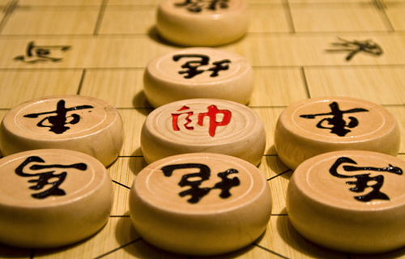

胜负判定
WIN OR LOSE JUDGMRNT


对方取胜
当棋局中出现以下情况判负，对方取胜
1、将死——另一方走一步棋之后试图吃掉一方的帅（将），但该方的帅（将）却不能躲避；
2、困毙——轮到一方行棋，但按规定，己方无棋可走；
3、认输——由于子力悬殊，继续抵抗毫无意义的主动认输；
4、长打（即长捉、长将、长杀、或一将一要杀）的一方通常判负；
5、行棋违规、违纪、超时等情况判负。
和棋
和棋是指理论上公认的双方均无取胜可能的局势，是指下棋不分胜负的终局。
1.双方理论上无法取胜的简单局面；
2.符合“六十回合规定”从任意一步开始六十回合内双方均无损失一子；
3.一方提和，另一方同意和棋；
4.长跟、长兑、长拦、长献、一捉一闲、或一将一闲，循环三回合后可判和。